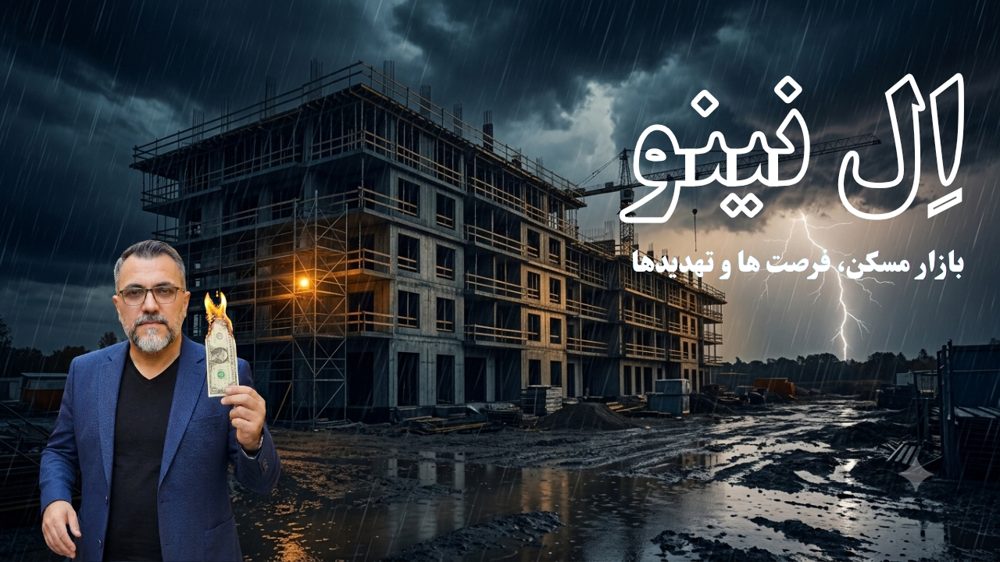

امسال، برخلاف چند سال اخیر، پاییز ایران قرار است داستان متفاوتی داشته باشد. سازمان هواشناسی کشور از شکلگیری یک النینوی بسیار قوی خبر داده که میتواند رکورد ناهنجاریهای گرمایی از سال ۱۹۷۹ تاکنون را بشکند. برای مالکان زمین، سازندگان و هرکسی که این روزها پروژه ساختمانی در دست دارد، این خبر صرفاً یک گزارش هواشناسی نیست؛ زنگ خطریست که باید در برنامهریزی ساختوساز و حتی تصمیم خرید ملک لحاظ بشه.
النینو چیست و چرا امسال «سوپر النینو» میگویند؟
النینو پدیدهای طبیعی است که با گرم شدن غیرعادی آبهای اقیانوس آرام شکل میگیرد و معمولاً بارش پاییز و زمستان ایران را افزایش میدهد. سازمان جهانی هواشناسی احتمال شکلگیری این پدیده در تابستان ۲۰۲۶ را حدود ۸۰ درصد اعلام کرده بود، عددی که تا پاییز و زمستان به بیش از ۹۰ درصد رسیده است. طبق دادههای سازمان هواشناسی، النینوی بسیار قوی در مرداد و شهریور ۱۴۰۵ رخ داده و شاخص نوسان جنوبی (SOI) هم کمترین مقدار ثبتشده برای این دوره آماری را نشان میدهد؛ یعنی هماهنگی کاملی با وقوع یک النینوی قوی دارد.
پیشبینیهای فصلی نشان میدهند بارش تمام ماههای پاییز (مهر، آبان و آذر) بالاتر از نرمال خواهد بود، با اوجی در نیمه دوم مهر تا نیمه آبان. سازمان مدیریت بحران کشور هم از احتمال افزایش بیش از ۷۰ درصدی بارشها نسبت به نرمال در پاییز و اوایل زمستان خبر داده و ۳۲ هزار تیم امدادی را برای مقابله با سیل و آبگرفتگی در حالت آمادهباش قرار داده است.
کدام مناطق بیشترین ریسک سیلاب را دارند؟
بر اساس هشدارهای منتشرشده، احتمال وقوع سیلابهای گسترده در غرب و جنوبغرب کشور، بهویژه استانهای کرمانشاه، ایلام و خوزستان بالاست. علاوه بر این، استانهای شمالی مثل گیلان، مازندران و گلستان و همچنین آذربایجان شرقی و غربی، اردبیل، کردستان و زنجان هم بارها هشدار نارنجی سیل و آبگرفتگی دریافت کردهاند. اگر پروژه یا زمینی در این مناطق یا نزدیک مسیلها و رودخانهها دارید، این فصل نیاز به توجه ویژه دارد.
این پیشبینی چه تاثیری روی بازار مسکن میگذارد؟
برخلاف تصور رایج که هواشناسی را فقط به کشاورزی مرتبط میدانند، بارشهای شدید و احتمال سیلاب مستقیماً روی چند لایه از بازار مسکن و ساختوساز اثر میگذارد:
- افت جذابیت زمینهای حاشیه رودخانه و مسیلها: زمینهایی که در سالهای خشک، ارزان و پرمتراژ به نظر میرسیدند، در فصلهای پرباران ریسک بیشتری دارند و ممکن است ارزش سرمایهگذاریشان کاهش پیدا کند.
- تاخیر در پروژههای در حال ساخت: بارشهای سنگین و پیدرپی میتواند عملیات گودبرداری و فونداسیون را متوقف کند و زمانبندی تحویل پروژههای مشارکت در ساخت را بههم بریزد.
- افزایش هزینه بیمه و ریسک ساخت: در مناطق پرخطر، بیمهگران ممکن است حق بیمه پروژههای عمرانی را بالاتر ببرند یا شرایط سختگیرانهتری برای پوشش خسارت سیل بگذارند.
- حساسیت بیشتر برای ساختمانهای قدیمیساز: بناهای فرسودهای که پیشتر درباره قدرالسهم و مشارکت در ساختشان صحبت کردیم، در برابر نفوذ آب و رطوبت آسیبپذیرترند و همین میتواند روی تصمیم مالکان برای تسریع نوسازی اثر بگذارد.
راهکارهای عملی پیشگیری از خسارت سیل در پروژههای ساختمانی
خبر خوب این است که بیشتر این ریسکها با برنامهریزی درست، قابل مدیریت هستند. چند راهکار کلیدی برای سازندگان و مالکان:
پیش از خرید زمین یا شروع ساخت
سابقه سیل منطقه و نقشههای خطر سیلاب شهرداری یا سازمان مدیریت بحران محلی را استعلام بگیرید. زمینهایی که در بستر یا حریم رودخانه و مسیل قرار دارند (حتی اگر خشک به نظر برسند)، برای ساخت مناسب نیستند و در بسیاری موارد اساساً مجوز ساخت هم نمیگیرند.
طراحی و اجرای فنی
سیستم زهکشی و آبروی مناسب برای پروژه در نظر بگیرید، سطح فونداسیون را بالاتر از تراز سیل منطقه طراحی کنید، و اگر پارکینگ یا انباری زیرزمین دارید، از عایقکاری رطوبتی مناسب و پمپ تخلیه اضطراری استفاده کنید.
زمانبندی عملیات اجرایی
در صورت امکان، گودبرداری و اجرای فونداسیون را در بازههای کمبارش برنامهریزی کنید و از انجام این مراحل در نیمه دوم مهر تا نیمه آبان (اوج بارشهای پیشبینیشده) خودداری کنید یا حداقل پوشش و تمهیدات موقت برای گود در نظر بگیرید.
بیمه و پوشش ریسک
برای پروژههای در حال ساخت، بیمه مسئولیت مدنی و بیمه تمام خطر پیمانکاران (CAR) را با پوشش صریح خسارت سیل و آبگرفتگی بررسی و تهیه کنید؛ این هزینه در مقایسه با خسارت احتمالی سیل، ناچیز است.
در نهایت، هماهنگی با شهرداری برای لایروبی مسیلهای اطراف پروژه و پیگیری مستمر هشدارهای هواشناسی و سازمان مدیریت بحران در طول فصل پاییز، سادهترین و کمهزینهترین کاریست که هر سازنده و مالکی میتواند انجام بدهد.
جمعبندی
النینوی امسال میتواند هم فرصت باشد (پایان چند سال خشکسالی و تامین بهتر منابع آبی) و هم تهدید (سیلاب و آسیب به پروژههای ساختمانی). تفاوت بین این دو، در آگاهی و آمادهسازی بهموقع است. اگر زمین یا پروژهای در مناطق پرخطر دارید، همین حالا وضعیت زهکشی، بیمه و زمانبندی اجرا رو بازبینی کنید؛ نه بعد از اولین بارش سیلآسا.
منابع: سازمان هواشناسی کشور، سازمان مدیریت بحران کشور و خبرگزاری مهر